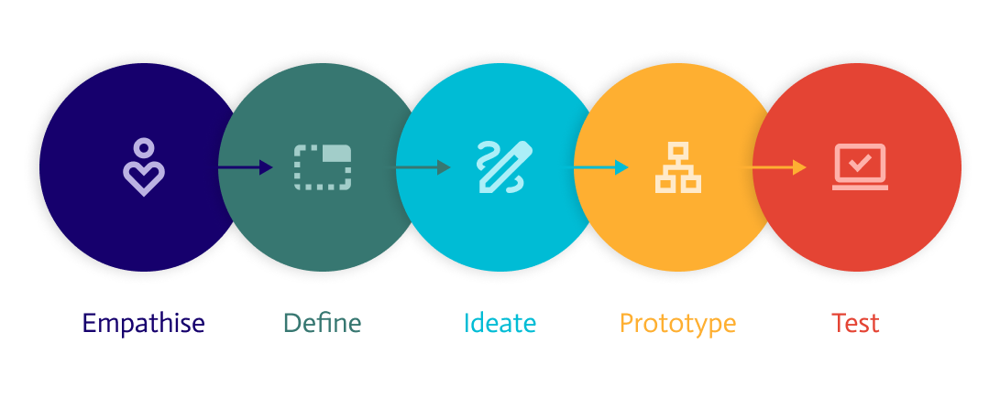
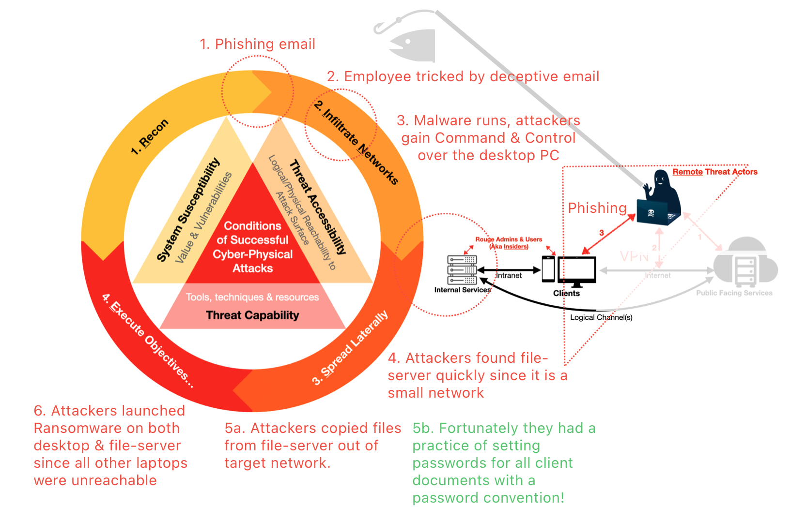
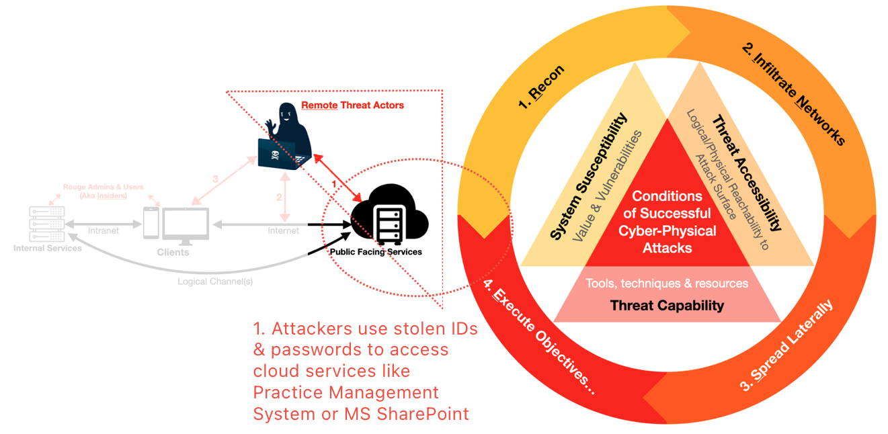
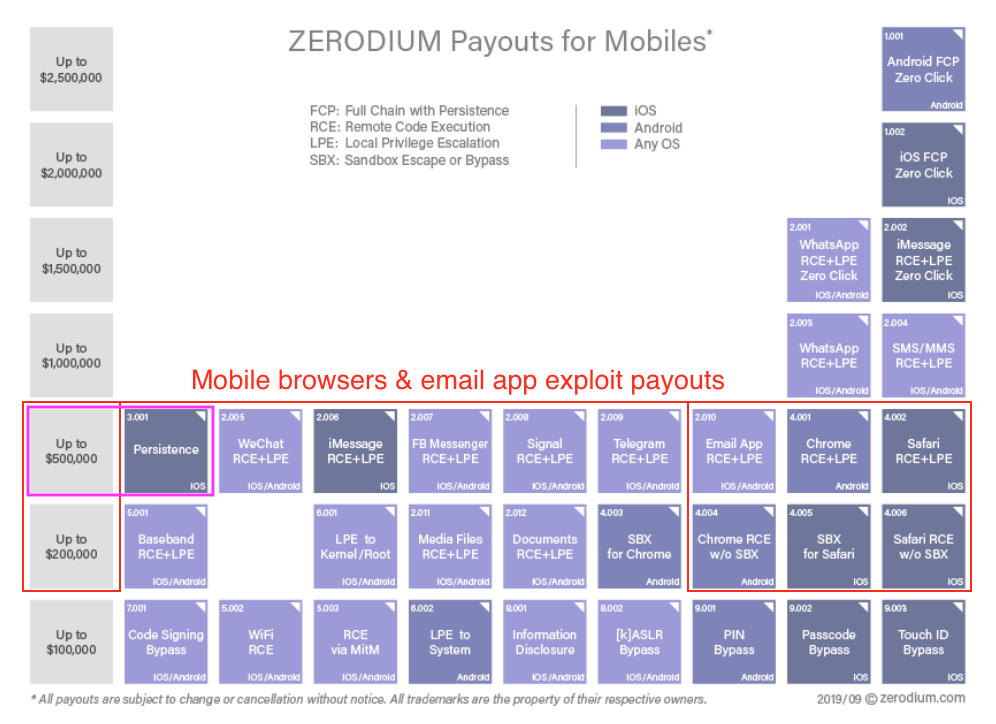
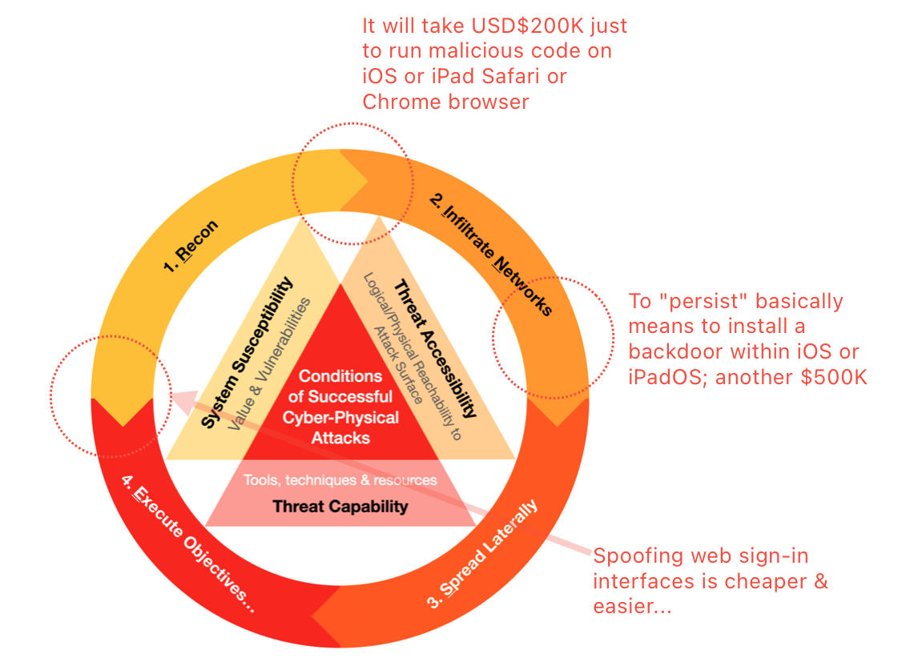

You don't need Windows network
Background
This entry demonstrates the application of Design Thinking to enhance network usability and utilises the Attack Life Cycle (ALC) mental model to illustrate security improvements.️
We use a hypothetical tech-refresh exercise for a small law firm (Ace Legal LLP) to show how Design Thinking & ALC can be used to come up with a better network that is both user-friendly & secure.
What is Design Thinking?
Design thinking is a human-centered, iterative process for solving complex problems that involves:
Source: dimagi 
- Empathising with users to understand their needs
- Defining the problems from a human-centric perspective
- Ideating to generate creative solutions
- Prototyping or Experimenting potential solutions
- Testing prototypes and iterating
It is a collaborative, optimistic, and experimental mindset that embraces ambiguity to create innovative solutions that are desirable, feasible, and viable. Although originally used in product development, we can adapt the main ideas to select (instead of building) products for a new network. We then use ALC mental model to evaluate the security benefits of the new prototype.
What's wrong with Ace Legal's existing network?
Background
Ace Legal is a small but high-value firm with 2 partners & 5 other employees operating for 5 years. They engaged a small IT service provider to handle their small office network, which comprises of Microsoft Windows laptops & a file-cum-printer server.
Following a ransomware attack and Microsoft cloud disruptions that significantly hampered their business functions, the partners need to take action to enhance their office network security.️
The partners being tech-savvy and curious about enhancing their cyber security knowledge for both personal and clients' benefit, discovered the concept of the Attack Life Cycle. Intrigued, they explored the application of Design Thinking to ensure both functionality and security.️
Pain-points w.r.t Needs
Let's start off with the first two aspects:
- Empathise needs, from partners to employees!
- Define the pain-points they had with their existing network & products.
Using a Need-vs-Pains table, they enumerated the key business needs & respective pain-points:
| Need | Pains / Problems |
|---|---|
| Compliance & Risk Management | - The ransomware incident was a HUGE hit to their reputation & the partners need to regain clients' confidence. They were fortunate that only one of the clerk's desktop PC & a legacy printer-cum-file server (hooked to a dot matrix printer & laser printers) were affected. All other laptops were either sleeping or out of office network. |
| Cloud service reliability & usability. | - The Microsoft cloud outages triggered this need to change. - Sharepoint is too complex to manage as a Document Management Systems. |
| Authenticating into Windows & non-Microsoft web services (e.g. cloud based Practice Management System) | - Strict password policy & constant changes are annoying. Users end up using same password for everything since it is hard to remember so many passwords. |
| Easy way to manage calendars | - Everyone in the firm uses iPhone. Too much hassle to switch between two different calendars. Share iCloud calendar as a public URL just to integrate into Microsoft Outlook is a BAD idea. |
Avoiding another ransomware incident is Ace Legal's TOP priority!
Why is the existing network susceptible to repeated attacks?
After enumerating the usability needs & pains, let's use ALC mental model to review the security gaps (the push factors). After which, we re-evaluate the new approach again to compare the pull factors in favour of the proposed solution.

It's cheap & easy to attack Windows network
System Susceptibility condition is easily met since the cost of attacking Windows is essentially free. In terms of Threat Capability, the bar is low.
- The barrier to entry is so low that many criminals can pick up from watching Youtube & following tutorials from whatever "hacker" forums. Github has abundance free offensive tools!
- Ace Legal's network is like a home lab that it is almost a walk in the park.
- Attackers can literally take their own sweet time to explore the network since Ace Legal does not subscribe to any monitoring services aka Managed Security services.
- The malware backdoor often include key-loggers & browser scrapers. Fortunately, the desktop PC was not used to access the cloud Practice Management System.
- The saving grace was their firm's password convention (which made passwords long, distinct & hard to guess) that they used diligently for the sake of meeting legal compliance for all files stored in file-server after printing hard copies.
Anti-Virus won't stop Attackers & Phishing won't stop either
We won't be getting rid of email anytime soon. Threat Accessibility is here to stay...
- Obfuscating malware with encryption & various low-cost technique are very effective against most Anti-Virus & most signature-based commodity security products.
- Hiding malware within password protected zip file easily denies email scanning.
- Most attackers would have tested their payloads before the campaigns thus typically not stopped by computers' Anti-Virus.
- Setting up valid domains to conduct phishing campaign is trivial.
- Attackers are patient & persistent.
- It's already very difficult to spot deceptive email prior to the boom of
Generative AI, it will get worse as adversaries adopt GenAI quickly.
What about Cloud or Software-as-a-Service?

Cloudy Security
- On paper, the online service is only as assuring as the certifications it has, e.g. Service Organization Control (SOC) 2 & Payment Card Industry Data Security Standard (PCI DSS).
- In practice, it's all about software quality, the 1st line of fire being the exposed web service ports (think ALC
1.Recon -> 4.Execute Objectives). - When the app layer is poorly design or implemented, it doesn't matter how many certifications or layers of encryptions, because data has to get out of the systems in plain eventually.
Assuming it is harder to attack at systems or application layer, then attackers will naturally target users...
Identity as the PERIMETER
Email & passwords are weak boundaries! Once adversaries get into Windows endpoint, it's trivial to steal credentials with key-loggers & tools to extract session tokens & credentials from browsers.
- As for as the Cloud services are concern, all these service requests will look legitimate especially when attackers have full control over the infected endpoints as proxies.
- Once email account is being taken over, it's hard know because attackers can easily delete security alerts emails & extract useful information to further their objectives.
How to Ideate?
Now that we are clear with usability & security issues, let's use a human-centric approach by first focusing on the partners & staff preferences & dislikes:
- Everyone in the firm uses an iPhone.
- They have personal iPads & are familiar with Apple products & ecosystem.
- The partners & staff lawyers disliked the bulky laptops & mostly had them on sleep mode, until the need to work with them.
What if iPad becomes a desktop?
I shared with the partners that iPadOS Stage Manager has matured to a point that it is very usable, especially for their use-cases:
They really liked the idea & were pleasantly surprised that using it like this was possible. But one of the partners asked, why iPad & not Macbook?
Why iPad?
It's simple:
There isn't a single case of Ransomware on iPad because it is technically hard & costly.
I extracted payout data from an established exploit brokerage for comparison:  It takes deep skills to develop such exploits, which is why they command a premium unlike cheap or free Windows malware.
It's expensive to hack into iPads

Running initial malicious codes is not enough, attackers need to stay or "persist" within the affected device, so as to further explore the network to complete objectives.
This also means moving laterally within a network of iPads (e.g. to reach that legacy file-cum-printer server), is very difficult.
Attackers next best move is to steal IDs & passwords because attacking established cloud services directly is hard (e.g. at the API level, might as well get paid from bug bounty programmes). They can still send emails with fake sign-in links!
How to deal with passwords?
Recall earlier in the Pain-Point table, dealing with passwords is a pain, so how would iPads help?
- At device level, they only need to key in once after device boots up.
- Apple's built-in password manager is useful for web sites that are less sensitive (e.g. social media), just generate a long unique password per site, select & use, no need to type.
- For sensitive services like their cloud Practice Management System (PMS), they can either opt to use passkeys instead of password if the service allows.
- Otherwise, turn on Multi-Factor authentication with One-Time-Password whenever possible but avoid web page logon whenever possible because there's hardly any security value of keying everything into the same fake web-page. Attackers just capture & replay at their end to get a valid session!
Fortunately, Ace Legal is using a cloud PMS that has a full screen iPad app. In that case, simply avoid browser-based sign-in altogether!
Experiment & Test
Based on the understanding gained from this exercise, the partners are willing to replace all laptops with iPads since the risk of another Ransomware attack is greatly reduced.
- The rest of the staff also found it easy to use Stage Manager with large external monitor, the experience is somewhat similar to that of a laptop.
- Their IT service provider manage to configure their iPads to print to their dot matrix printer.
- They got rid of the Windows file server & replaced with iCloud storage.
- The partners tested Jamf, Kandji (both 3rd party Apple Mobile Device Management systems) & Apple Business Essentials offerings & picked Kandji, because it had Endpoint Detection & Response agent add-on in case they want to add Macbooks to the fleet.
- The built-in Page, Numbers, Keynote & so on worked for them, no need to pay subscription for basic productivity tools.
Most importantly, the migration of emails, documents & workflows was quite painless!
Before vs After Comparison
| Network with Windows laptops | iPad-based network | |
|---|---|---|
| Usability | Poor, laptop is always slow. |
Good & fast. |
| Reliability | Poor: Updates caused all kinds of issues. Office 365 outages. |
Very reliable. |
| Authentication | Painful to type, change & remember. | Easy with TouchID & FaceID. Easy native password management for browser based sign-in. Better security with generated strong passwords for services that only accepts passwords. Use passkey & Multi-Factor for more sensitive online services. |
| Central Management | There was no central management of laptops & assets. Ace Legal's IT provider was relying on Excel spreadsheets. A few Blue-Screen-of-Death after Windows updates forced the partners to stop automatic updates. |
The partners could easily setup once on their own with Kandji MDM, it's that user-friendly. Patch management is easy, reliable & automatic. |
| Probability of recurring Ransomware incident. | HIGH, because low-cost intrusions can be achieved by low skilled criminals. | LOW, because it is costly to intrude into iPad devices directly. |
| Susceptibility to credential theft | HIGH, due to weak reused passwords. The PMS did not have a Windows thick client app, means only browser sign-in, which is low cost to spoof. | LOWER, because using PMS iPad app directly, avoid signing in sensitive services related to Ace Legal with browsers. |
| Data Theft Susceptibility | High, there are files residing on laptops, some of which may not have the password protection during the drafting phase. There's no remote locking of lost laptops. Windows Bitlocker encryption key can be extracted with physical means |
LOW since file direct extraction whether logically or physically is non-trivial for iOS & iPad. The shared files on iCloud are encrypted at service level & file level as per the firms password convention (e.g encrypt PDF & Apple Page documents with password). MDM allows remote locking & data-erase for lost devices. |
Closing
- Cyber Security is mostly a software quality problem.
- Windows don't have a good track record of being user-friendly or secure.
- The offline Windows laptops limited their damage.
- Their diligence with file-level password protection mitigated double-extortion, which is common with such Ransomware campaign.
- Double extortion means when victims decide not to pay for ransom, attackers threaten to publicly release or sell victims' data to dark web.
- This is NOT a sponsored post by Apple or any of the mentioned services.
- This is also NOT a post to bash Microsoft or Windows.
- The objective fact if you look at 1st ALC with Windows endpoint vs iPads, is to quickly highlight the cost of attack without going into nitty gritty technical nuances.
By adapting Design Thinking approaches, we achieve both usability & security by making it costly for Threat Accessibility. And with Attack Life Cycle mental model, we can objectively evaluate the security improvements.